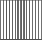
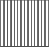
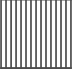
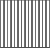

From the modern London Eye to the historic Tower of London, below are London's most visited tourist attractions. Many of London's top 10 attractions are free, making them affordable places to soak up some culture – you can book to visit others via the buttons below. Whether you prefer history or modern art, you'll find it at one of these must-visit spots.
See top attractions and explore lesser-known areas of the city on one of these great London sightseeing tours. From bus tours, to walking tours, to Thames river cruises, to bike tours, sightseeing in London is varied and full of interesting possibilities.
Find out about the best London restaurants here, or enjoy a drink at one of London's lively pubs and bars.
Your guide to London shopping, from luxury shops such as Harrods, quirky retail outlets like Dover Street Market, to bargain fashions at London's markets, big London shopping centres such as Westfield and more. It's time to hit the shops in London!
`